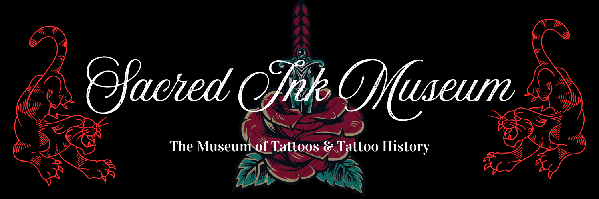
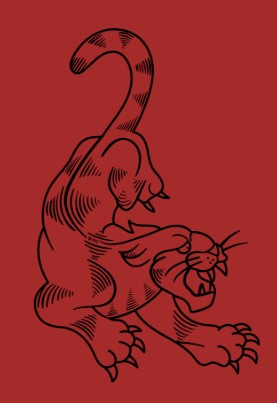

The museum is dedicated to preserving and sharing the history of tattooing as a form of visual art and cultural expression.
We are located in Sacramento, California. There is a parking lot on the side of the building and metered street parking available.
Tickets can be purchased online or at the door. Members receive free admission.
Photography is allowed for personal use, but flash and tripods are not permitted.
You can support us through memberships, donations, or volunteering. Visit the “Get Involved” page to learn more.
Our collection includes over 1,000 artifacts, including tattoo equipment, flash sheets, and historical documents. Objects are rotated frequently through the Museum's exhibitions.
Our collection is built through donations, acquisitions, purchases, and loans from individuals and institutions passionate about tattoo history.
If you are interested in donating or loaning items, please contact us at curatorial@sacredinkmuseum.org.
